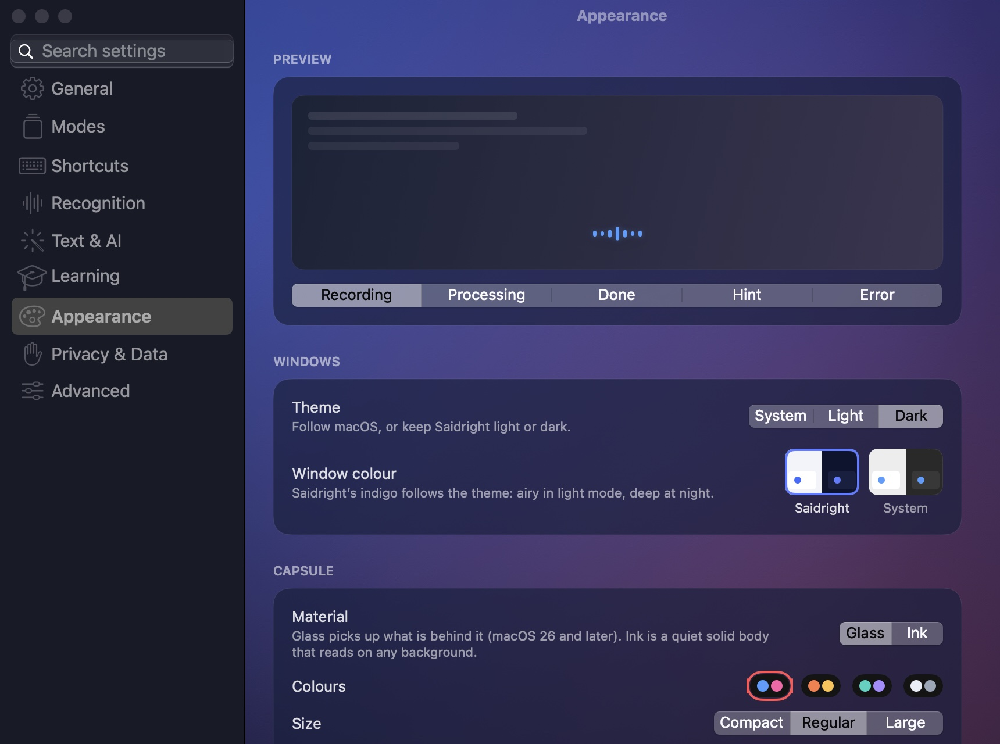
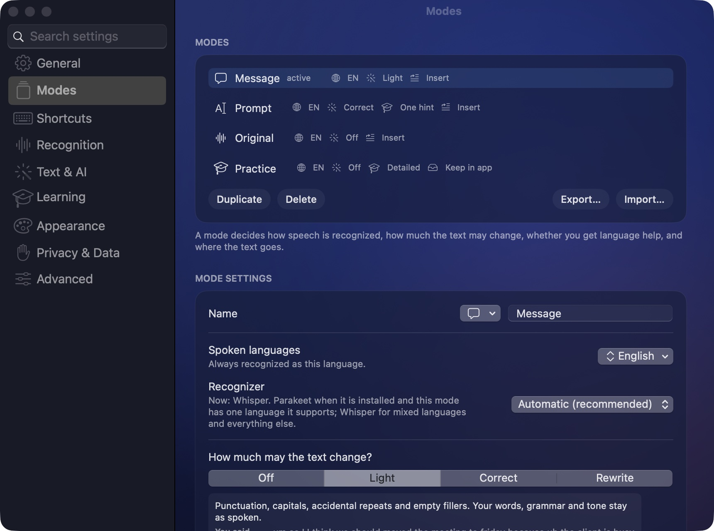

Stop fearing imperfect words. Set your speech free.
Most of us type slower than we think and speak more freely than we write. Saidright lets you talk the way you talk — with pauses, mixed languages and the odd mistake — and gives back clean text. Every sentence makes you a little better at saying what you mean, to people and to AI.
The most refined dictation on the Mac.
A small capsule that lives above your Dock. It breathes with your voice, shimmers while it thinks, and settles with a quiet check. Make it yours — try it right here.
State
Colours
Material
Size

Every detail, previewed liveMaterial, palette, size, position, motion and sounds — each change shows in the preview before you dictate. Windows take on Saidright's indigo: airy in light mode, deep at night.
One key. A mode for every moment.
A mode decides how much your words may change and where they go. Use ours or make your own — and switch in a blink with ⌃⌥M, without leaving the app you're in.
You say
You get
Your rules, your modes
Name a mode, pick its icon, its languages, its recognizer, how far the text may change and whether you get language help. Add your own instructions — “always formal”, “keep my slang”, “write for a developer”. Export a mode and share it with your team.

Say a list. Get a checklist. Say a table. Get a table.
Saidright hears structure in what you say — tasks, items, steps, comparisons — and lays it out. Ordinary sentences stay sentences. Notes, Pages, Word and Mail get a real table; messengers and AI chats get clean text. Nothing is added, nothing is lost: every word comes from you.
Talk to AI the way you think
The Prompt mode turns a rambling thought into a clear request — goals, steps and constraints laid out. Models answer better when you give them more, and speaking is the fastest way to give more.
Grow every time you speak.
Writing to a colleague in English? Your message goes out as you said it — and right after, a small card grows out of the capsule with the one correction worth knowing. No lessons to schedule. Your everyday work becomes practice.
One tip, explained like a friend
A short reason in your own language, pitched to your level. Ask “Why?” for the rule and an example.
From tips to skills
“Practise later” turns a correction into a spaced-review card. Recurring topics show what to work on next.
Mix languages mid-sentence
Switch between your languages in one breath. Terms keep their spelling, and nothing is translated behind your back.
Honest, never noisy
Correct sentences get nothing. If the recognizer may have misheard you, the tip says so and never counts it as your mistake.
Pick the recognizer that fits you.
Everything below runs on your Mac. Install any of them from inside the app — sizes, memory and languages are shown before anything is downloaded. On long dictations Saidright recognizes finished phrases while you are still speaking.
from the end of a phrase to text with Whisper on an M-series Mac
with NVIDIA Parakeet for one-language modes
shorter wait after long dictations, thanks to recognition while you speak
| Recognizer | Per phrase | Word errors RU / EN / DE | Best for |
|---|---|---|---|
| Whisper large-v3-turbo | ≈0.5 s | 4.1 % / 3.6 % / 4.4 % | Mixed languages, Chinese, your own vocabulary |
| NVIDIA Parakeet TDT 0.6B v3 | ≈0.1 s | 6.1 % / 4.3 % / 5.6 % | Speed, one language per recording (25 European languages) |
| Apple on-device | fast | — | No download; one language per mode (macOS 26+) |
Measured on 100 real-speech clips from the FLEURS dataset plus synthetic and mixed-language clips on an M4 Pro. Your voice and microphone will differ. Text editing, formatting and tips add the time of the text model you choose.
Your voice never leaves your Mac.
Private by design, open by choice. You can read every line of code that touches your words.
On-device recognition
Audio is recognized on your Mac and deleted afterwards unless you choose to keep it.
Text help on your terms
Editing and tips use a model you pick: fully local through Ollama, a fast free cloud tier such as Groq, or your own key. “Local only” blocks every cloud request.
Open source, no tracking
Apache 2.0. No account, no analytics, no telemetry. Keys stay in the macOS Keychain; every release lists its checksum.
Ready in a minute.
Saidright is free and not notarized by Apple (that needs a yearly fee), so macOS asks you once to confirm that you trust it.
Download
Open Saidright.dmg and drag Saidright into Applications.
Open it once
macOS says it can't verify the developer. Click Done, not Move to Trash.
Allow it
System Settings → Privacy & Security → Open Anyway. Once per version.
Follow the introduction
Choose your languages and allow the microphone. Then tap right ⌘ anywhere and speak.
Questions
Is it really free?
Yes. Saidright is open source under the Apache 2.0 licence. Local recognition and local tips cost nothing. Only a cloud text service you connect yourself bills you directly.
Does it need the internet?
Only to download a recognizer once. After that, dictation works offline.
How do I make a table by voice?
Just ask for it: “I need a table with three columns: ChatGPT, Claude and Gemini”, then say the values row by row. With smart formatting on and a text model connected, it arrives as a Markdown table, ready for notes, documents and AI chats.
Which Macs are supported?
Macs with Apple silicon (M1 or later) on macOS 14 or later. Intel Macs are not supported.
Why does macOS warn me?
Apple's notarization requires a paid developer membership. This free version is signed but not notarized, so macOS asks you once to confirm it in Privacy & Security.
Does it score my accent?
No. Tips only cover clear grammar and word-choice mistakes. A possible mishearing is labelled as such and never counted against you.